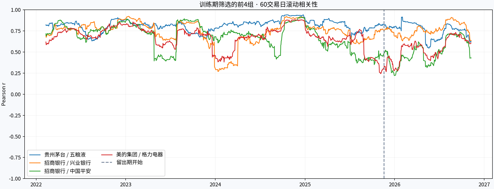

数据与清洗
东方财富日线，独立请求后复权口径（fqt=2）。校验证券身份、日期、重复行、正价格与OHLC边界；按保存的交易日历对齐，计算 rₜ = ln(Pₜ/Pₜ₋₁)，再删除共同缺失。缺失日及其后一日均不跨日计算收益。
不填充停牌或缺失值，不删去大涨跌。GitHub归档的复权口径未声明，未混入本次收益率分析。原始响应、请求参数、抓取时间、SHA-256与日历均已保存。
从价格协方差出发，用复权收益率识别共同波动，
再观察它能否跨越时间、独立于大盘而存在。
“扣除大盘”使用沪深300ETF日收益率做带截距线性回归；残差相关性仍可能来自行业、风格或其他共同因素。
| 股票组合 | 近5年 | 训练期 | 留出期 | 扣除大盘后¹ | 最近60日² | 留出期95%区间³ |
|---|
¹ 全样本回归残差相关性。² 最近60个共同有效样本日。³ 只对训练期排名前8组做区块自助法区间估计；未校正多重比较，不是显著性或交易信号认证。

滚动曲线使用连续60个日历交易日，缺失窗口不计算；表格近期数值使用共同有效样本日，口径有所不同。灰色虚线为留出期起点。
东方财富日线，独立请求后复权口径（fqt=2）。校验证券身份、日期、重复行、正价格与OHLC边界；按保存的交易日历对齐，计算 rₜ = ln(Pₜ/Pₜ₋₁)，再删除共同缺失。缺失日及其后一日均不跨日计算收益。
不填充停牌或缺失值，不删去大涨跌。GitHub归档的复权口径未声明，未混入本次收益率分析。原始响应、请求参数、抓取时间、SHA-256与日历均已保存。
同时输出价格协方差、日收益率样本协方差，以及Ledoit–Wolf收缩估计。此处价格是后复权理论价格，协方差单位为理论元²，并非实际成交报价的协方差。价格协方差受价格水平、单位与趋势影响，仅作附表；判断共同波动主要看收益率相关性。
年化协方差 = 日协方差 × 252，是固定交易日惯例，未校正自相关。PCA基于标准化收益率，第一主成分不自动等同于市场因子。层次聚类采用距离 √((1−ρ)/2)、average linkage；切成4组仅为探索展示。
按时间前80%样本筛选股票对，后20%检验延续性。留出期区间采用成对循环区块bootstrap（10日块、1,000次、固定随机种子73）。原始结果另含Spearman相关与固定训练期β的留出期残差相关。
样本是当前选定的16只存续股票，存在选择和存续偏差；复权历史也可能修订。这是回顾性检验，不是严格时点回测。后复权收益不是独立验证的分红再投资总回报。同步相关不能证明因果、领先关系或可套利价差。
PyPortfolioOpt：参考其风险矩阵设计与收缩估计建议。Riskfolio-Lib：参考相关性与层次聚类研究思路。本轮未直接安装这两个组合优化框架。
实际计算使用 scikit-learn LedoitWolf、NumPy、pandas 与 SciPy linkage。AKShare文档用于核对复权口径。